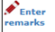

Thesis Approval - Next Section
Figure 68: Thesis Approval - Searching Result
Steps:-
- The result displays all the thesis/proposal that has been approved by the Faculty.
- The result will show whether the thesis/proposal is new or not by displaying the icon at the No. column.
- To give the remarks, click  to proceed.
- To read or download attachment uploaded by the student is by clicking the link

- To upload attachment, click Attachment button.
- To edit description of the file/attachment, click Attachment button.
- To change Supervisor/Co-supervisor, click the link
 .
.
- To view Supervisor/Co-supervisor that has been assigned, click the link
 .
.
- To confirm the decision of the thesis proposal, tick the proposal and choose the approval status i.e. Approved, Approved with Changes or Disapprove
- To give overall remark, enter the remark into the field.
- Then click the Submit button to proceed.
- When Submit button is clicked, the email notification will be sent to the student and faculty by the system (Refer Appendix). Plus, email notification will also be sent to the supervisor that has been assigned.
- To print the proposal list, click Print Proposal List.
Generate PDF File

Figure 19: List of Thesis for Senate Approval PDF
Steps:-
- To print, click the print logo button
 to print.
to print.
- To save file (PDF) click the download logo button
 .
.
Created with the Personal Edition of HelpNDoc: Free PDF documentation generator